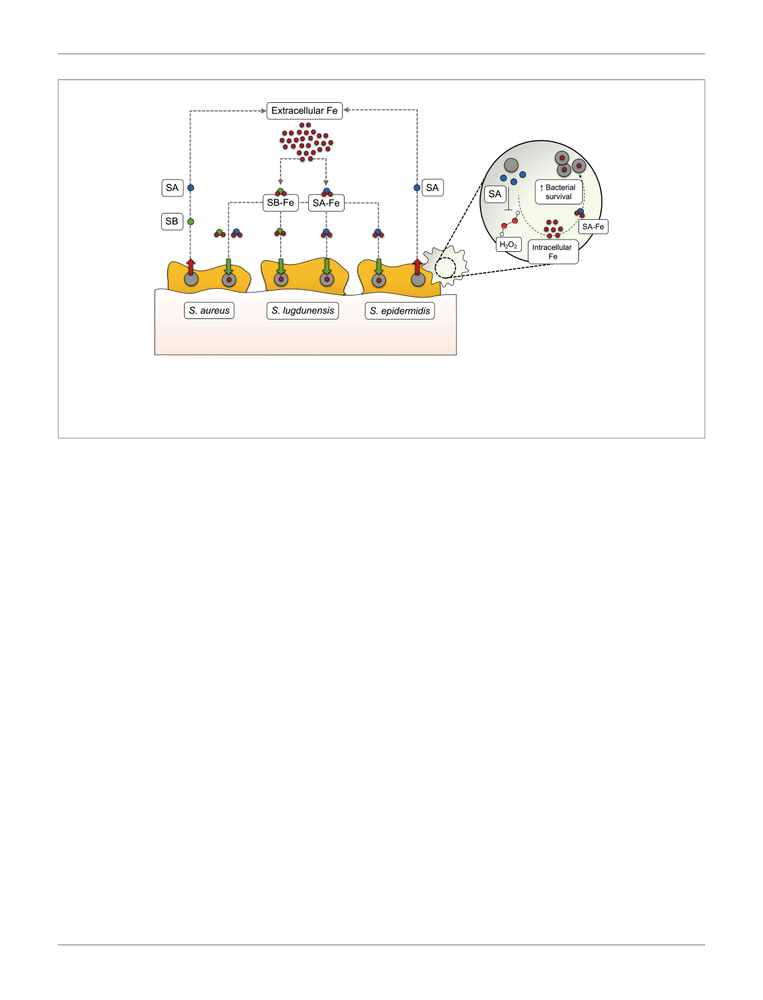

Oliveira et al.
A
Interplay Between S. epidermidis Biofilms and Iron
B
FIGURE 1 | Siderophore-mediated iron acquisition in staphylococci. (A) While S. aureus produces two different siderophores (staphyloferrin A, SA, and staphyloferrin B,
SB), S. epidermidis synthesizes SA only, and S. lugdunensis hijacks SA and SB from these two staphylococci species instead of producing them. After being secreted
into the extracellular medium, SA and SB bind to extracellular iron (Fe) and make their way back to the cell as siderophore-iron complexes (SA-Fe and SB-Fe), providing
the iron levels required for several bacterial processes, including biofilm formation. (B) In S. epidermidis, SA-mediated iron acquisition has recently been found to
contribute to bacterial survival in human macrophages, by withstanding the action of certain reactive oxygen species, such as hydrogen peroxide (H2O2).
evidence about the promising antibacterial activity of this group of
compounds against Gram-positive and Gram-negative pathogens
(Ji et al., 2012; Wencewicz et al., 2013; Ito et al., 2016; Ito-Horiyama
et al., 2016), its efficacy against biofilms, in which antibiotic
penetration is particularly dampened, remains unknown and is
worth further investigation.
Iron acquisition-related molecules are also regarded as suitable
target candidates for vaccine development since they display a good
degree of conservation and their expression is readily induced as
soon as pathogens invade the host and face nutritional immunity
(Sheldon and Heinrichs, 2012). The Syntiron/Sanofi Pasteur
consortium recently started preclinical trials on a multivalent
vaccine based on four iron-regulated lipoproteins for the
prevention of S. aureus skin and soft tissue infection (Syntiron,
Sanofi Pasteur, 2018), although no detailed information has been
made publicly available.
CONCLUSIONS AND PERSPECTIVES
S. epidermidis biofilm-associated infections are an increasing issue
worldwide and have posed huge challenges to healthcare
professionals. In the years to come, the global spread of
multidrug-resistant lineages (Lee et al., 2018) may render the
treatment of S. epidermidis biofilm-associated infections
extremely difficult. Given this likely scenario, there is an urgent
need to identify alternative bacterial targets for the development of
novel anti-infective strategies. During the last years, we have been
witnessing a renewed interest in bacterial iron acquisition
mechanisms, mostly due to very promising findings underscoring
the complex regulatory role of iron in biofilm formation, as well as
the major role of siderophores in the virulence of several pathogens,
including S. epidermidis. Consequently, this has put a spotlight on
iron acquisition-related processes and brought a new hope for the
development of a much-needed new generation of therapeutic
strategies against life-threatening nosocomial infections.
Nevertheless, there is still a long road ahead, as we still need to
achieve a deeper understanding of the different biological roles that
siderophores may assume in the pathogenicity of biofilm-associated
infections and, most importantly, of the whole range of
consequences of inhibiting iron acquisition in bacteria.
DATA AVAILABILITY STATEMENT
The original contributions presented in the study are included in
the article/supplementary material. Further inquiries can be
directed to the corresponding author.
AUTHOR CONTRIBUTIONS
NC and FO drafted the first version of the manuscript. HR and MV
reviewed and edited the first version of the manuscript. All authors
contributed to the article and approved the submitted version.
FUNDING
FO is supported by the Fundação para a Cien̂ cia e a Tecnologia
research project with reference PTDC/BIA-MOL/29553/2017, under
the scope of COMPETE2020 (POCI-01-0145-FEDER-029553).
5